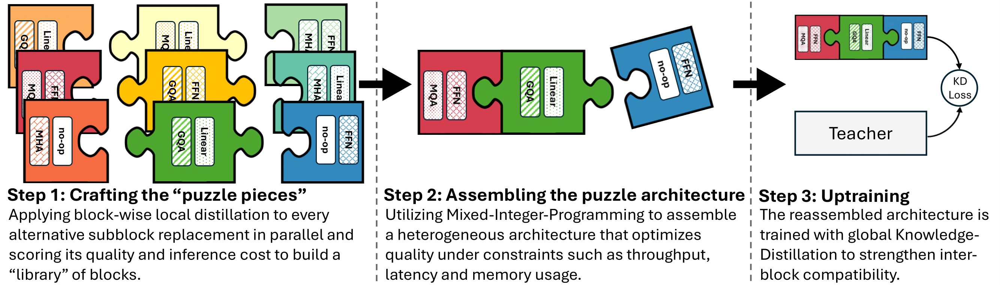
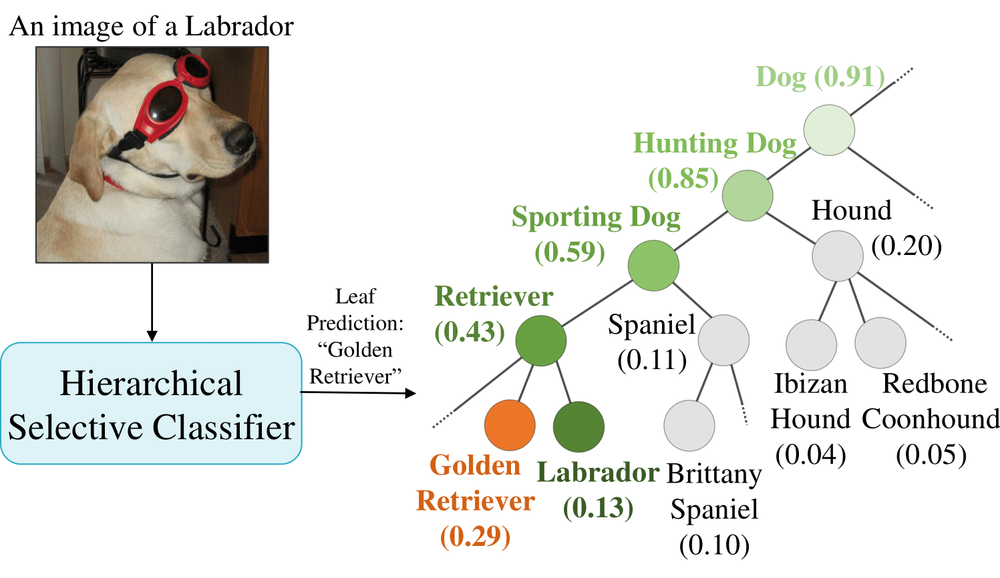
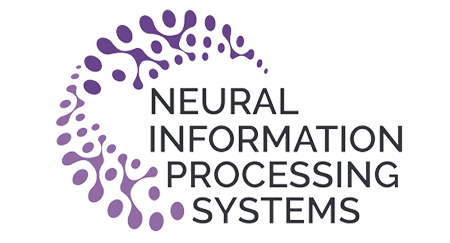
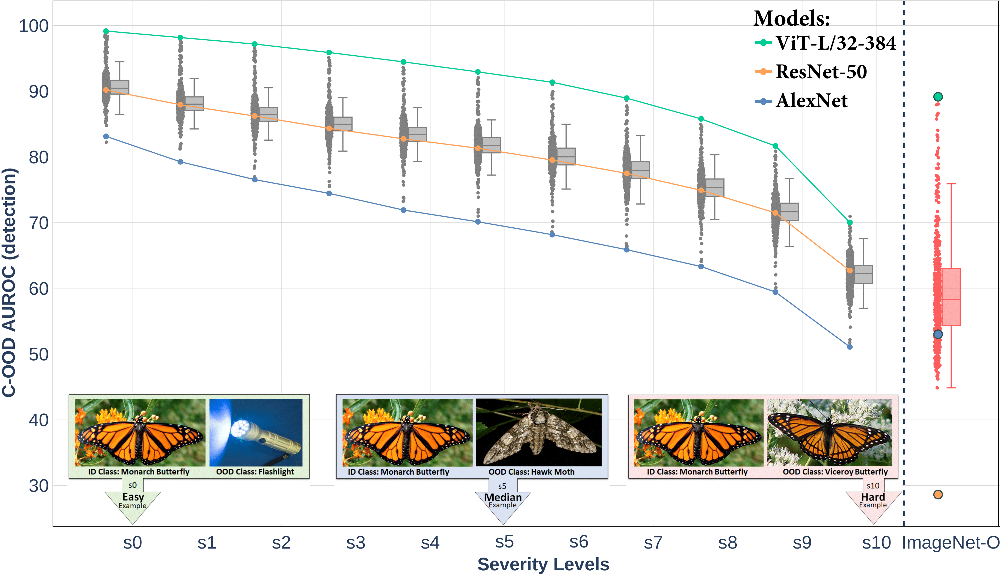
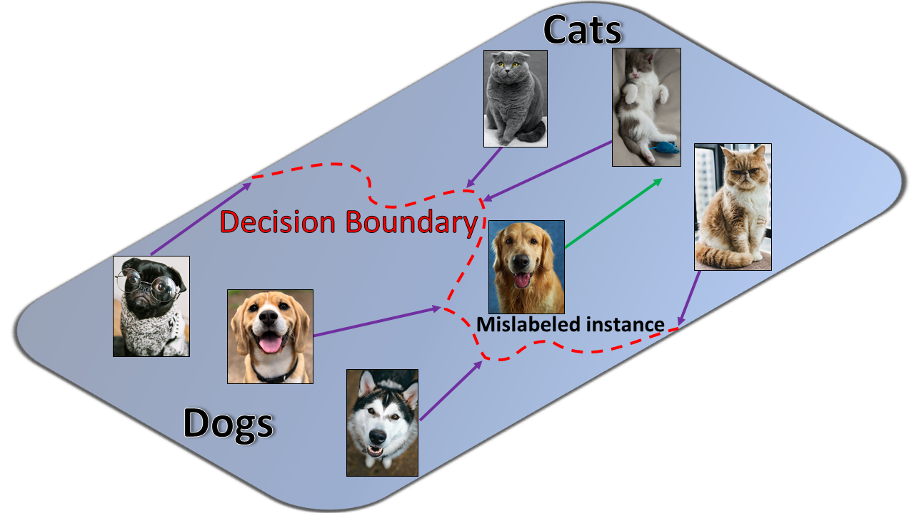

|
Ido Galil I'm currently a Deep Learning Researcher at Nvidia and finishing my PhD under the supervision of Prof. Ran El-Yaniv at the CS faculty, Technion. My research at Nvidia focuses on Neural Architecture Search (NAS) for large language models (LLMs) and generative AI models. My PhD at the Technion revolves around deep neural networks' reliability and safety in computer vision (CV) and natural language processing (NLP). My thesis specifically focuses on understanding and enhancing models' uncertainty estimation performance (selective prediction, confidence calibration, and ranking) and ensuring their robustness under distribution shifts and malicious adversarial attacks. |

|
Publications |
|  |
Puzzle: Distillation-Based NAS for Inference-Optimized LLMs
Authors: Akhiad Bercovich, Tomer Ronen, Talor Abramovich, Nir Ailon, Nave Assaf, Mohammad Dabbah, Ido Galil, Amnon Geifman, Yonatan Geifman, Izhak Golan, Netanel Haber, Ehud Karpas, Roi Koren, Itay Levy, Pavlo Molchanov, Shahar Mor, Zach Moshe, Najeeb Nabwani, Omri Puny, Ran Rubin, Itamar Schen, Ido Shahaf, Oren Tropp, Omer Ullman Argov, Ran Zilberstein, Ran El-Yaniv ArXiv, 2024 TL;DR: Puzzle accelerates LLM inference on specific hardware while preserving capabilities. Through a novel decomposed NAS approach, we optimize large models (tens of billions of parameters) under strict hardware constraints. We achieve up to 2.17× speedup with minimal performance trade-off. Summary: Despite LLMs’ impressive results, they’re often bottlenecked by computational costs. Puzzle addresses this by leveraging blockwise local knowledge distillation and mixed-integer programming for hardware-specific model optimization. This approach maintains accuracy while significantly reducing inference overhead. |
|  |
Hierarchical Selective Classification
Authors: Shani Goren* · Ido Galil* · Ran El-Yaniv (*Equal contribution)  NeurIPS, 2024 TL;DR: We extend selective classification to a hierarchical setting, allowing models to reduce the specificity of predictions (e.g., “malignant tumor” instead of a precise subtype) when uncertain. Summary: Traditional selective classification only allows a full prediction or rejection. Our Hierarchical Selective Classification (HSC) uses class hierarchies to offer partial yet valuable predictions (e.g., at a higher-level node). We propose inference rules that adjust predictions based on uncertainty, improving both selective performance and calibration. |
|  |
A Framework for Benchmarking Class-out-of-distribution Detection and its Application to ImageNet
Authors: Ido Galil · Mohammed Dabbah · Ran El-Yaniv ICLR, 2023 (Top 25%) TL;DR: Introduces a novel framework to benchmark class-OOD detection at multiple difficulty levels. Applied to 500+ pretrained ImageNet-1k classifiers, revealing new insights on open-set recognition. Summary: Existing C-OOD benchmarks can be biased or too easy. We propose a method for creating multi-level OOD benchmarks that are not biased towards any single model or detection technique. We systematically evaluate 500+ classifiers, showing how training regimes (e.g., knowledge distillation, ViT variants) impact OOD detection performance. |

|
What Can We Learn From the Selective Prediction and Uncertainty Estimation Performance of 523 ImageNet Classifiers?
Authors: Ido Galil · Mohammed Dabbah · Ran El-Yaniv ICLR, 2023 TL;DR: Comprehensive analysis of 523 pretrained ImageNet models for selective prediction and uncertainty estimation. Highlights training regimes (especially distillation) and architectures (ViT) that excel in calibration, ranking, and selective performance. Summary: We examine metrics like AUROC, ECE, selective risk, and SAC across hundreds of models. Distillation often yields the best uncertainty estimation. A subset of ViTs consistently outperforms other architectures. Post-training calibration (temperature scaling) proves more beneficial than expected in ranking and selective risk. |
|  |
Disrupting Deep Uncertainty Estimation Without Harming Accuracy
Authors: Ido Galil · Ran El-Yaniv NeurIPS, 2021 TL;DR: Introduces ACE (Attack on Confidence Estimation), which disrupts a neural network’s uncertainty estimates without harming its accuracy, rendering standard selective prediction mechanisms unreliable. Summary: Traditional adversarial attacks target accuracy by pushing inputs across the decision boundary. ACE selectively pushes correct instances closer to the boundary (reducing confidence) and incorrect instances farther from the boundary (increasing confidence). This makes reliance on uncertainty estimates dangerous for risk-sensitive tasks (e.g., medical applications). |
Teaching |
|
I served as a TA for the “Data Structures” course at the Technion for 3.5 years. All my tutorials and other helpful materials (in Hebrew) are available on my YouTube channel. |
Media / Interviews |
|
I was interviewed (in Hebrew) about my PhD research and teaching experience. You can listen to the interview on Spotify. |